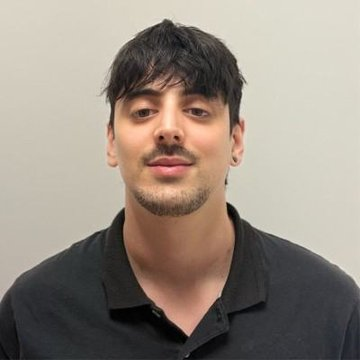
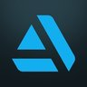
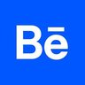
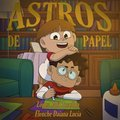

Tomas
Carballes
Generalista 3D

ArtStationtomascarballes.artstation.com

Behancebehance.net/tomascarballes
LinkedInlinkedin.com/in/tomas-carballes
Sobre mí
Soy egresado en Diseño Multimedia por el ISEC. Me considero una persona colaborativa y comunicativa, ya que creo que el diálogo efectivo es fundamental para el éxito en cualquier entorno laboral. Me apasiona el arte y el mundo multimedia, con un enfoque particular en la industria 3D y la creación de mundos inmersivos a través de un detallado lorebuilding. Mi objetivo profesional es integrarme a un equipo de producción creativa y contribuir al desarrollo de videojuegos, cine o proyectos publicitarios de alto nivel.
Experiencia Laboral
Diseñador Web y Gráfico | IT Desarrollos SRL | 2023 - Presente
- Diseño UI y Prototipado: Creación de interfaces de alta fidelidad y prototipos interactivos en Figma.
- Colaboración Interdisciplinaria: Trabajo conjunto con equipos multidisciplinarios para asegurar la consistencia del diseño y la entrega eficiente de proyectos.
- Identidad de Marca: Desarrollo y mantenimiento del sistema visual corporativo en todos los activos digitales.
- Activos Visuales: Diseño de gráficos y composiciones complejas utilizando Photoshop e Illustrator.

Director de Iluminación y Render / Artista 3D | "Astros de Papel" (Cortometraje) | 2023 - 2025
- Modelado y Texturizado 3D: Desarrollo de assets y entornos de alta calidad en Blender.
- Iluminación y Shading: Codesarrollo del shader maestro de iluminación y el estilo visual junto al equipo de dirección.
- Pipeline de Renderizado: Diseño y gestión del flujo de trabajo técnico para optimizar los tiempos de renderizado del equipo de producción.
F
Artista 3D Freelance | 2022 - 2024
- Modelado de Props y Entornos 3D: Creación de assets y entornos de alta calidad con enfoque en narrativa visual.
- Texturizado PBR y Shading: Aplicación de flujos de trabajo PBR avanzados y ajuste de materiales para lograr resultados fotorrealistas en Blender.
- Optimización de Assets: Ejecución de retopología y desplegado de UV para garantizar una geometría limpia y un renderizado eficiente.
- Renderizado Final: Producción de imágenes estáticas y secuencias de alta resolución, gestionando la iluminación y composición para proyectos de portafolio.
P
Diseñador Gráfico | Pristine Luxury Camps | 2022 - 2023
- Identidad de Marca: Creación del manual de marca oficial y las pautas técnicas para la consistencia visual.
- Marketing y Redes Sociales: Diseño de folletos de alta gama, flyers y activos digitales con Photoshop e Illustrator.
- Sinergia de Equipo: Alineación de la producción visual con las estrategias de marketing mediante la colaboración entre equipos.
Educación
- Diseño Multimedia - 2020 / 2023
ISEC (Instituto Sudamericano para la Enseñanza de la Comunicación) - Diseño de Videojuegos - 2017 / 2019
Escuela Da Vinci de Arte Multimedial - Diseño Gráfico - 2017
Universidad de Buenos Aires (UBA) - Técnico en Diseño Gráfico y Diseño Industrial - 2012 / 2016
Escuelas Técnicas ORT